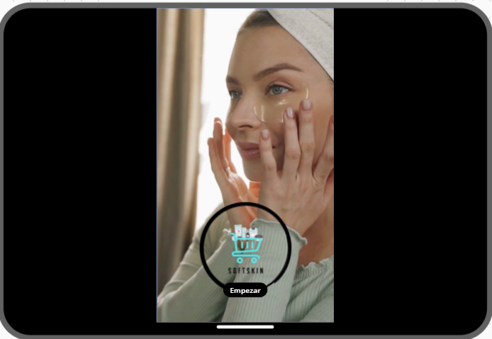
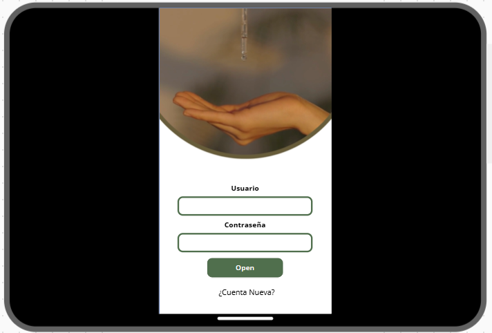
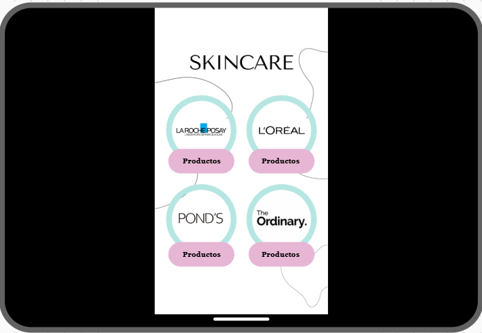

Inglés
Un año de grandes aventuras y experiencias, siempre lo recordaré como el año en el que me empecé a forjar como la persona que soy hoy. El año en el que me equivoqué, experimenté pero fue uno de los que más me marcó y ahí empezo este maravilloso viaje que pronto llega a su fín. Gracias Teacher Vladi por estar presente ese año, sin duda fue un gran apoyo.
Journey through History
En este proyecto creé una historia completamente en inglés, combinando creatividad y aprendizaje del idioma. La primera vez que participaba en un evento así y en inglés lo hizo apun más retador, pero agradezco a mi quipo de trabajo que me ayudo y juntos pusimos a andar ese proyecto.


Informática
Informática en primer año fue todo un reto, yo no habia tenido mucho contacto con una computadora antes, podria decir que a lo mucho sabia como encenderla, pero Teacher Dany fue un gran apoyo y con sus clases me inspiraba siempre.
Hackaton
Hackaton un proyecti en el que me sentí retado al desarrollar un prototipo de aplicación usando una herramiento completamente nueva para mí, fue uno de los pryectos más difíciles pero a´pun así lo recuerdo con mucho cariño.



Valores
Valores fue de gran ayuda en primer año, me ayudó a conocerme, saber mis fortalezas y debilidades, inculcó y fortaleció valores en mí. Tengo muy buenos recuerdos de ese año con mis compañeros de diferentes años.
Leaving 360°
Uno de los proyectos que desarrollamos de forma mpas completa con mis compañeros por todo lo que tuvimos que crear, fua una linda experiencia, trabajé con muchos compañeros por primera vez y creamos lazos muy bonitos sin dejar de lado todo el aprendizaje que obtive que me ayudó para segundo y tercero.